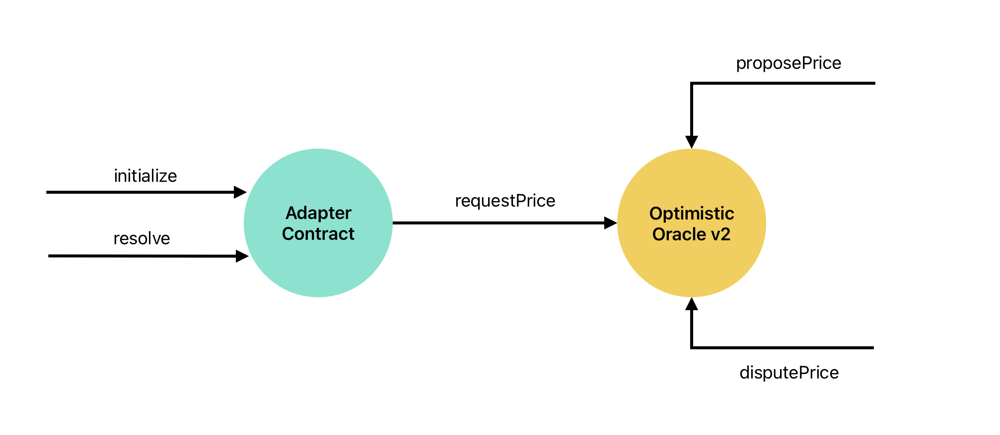

Оракул

В качестве оракула был выбран UMA (Optimistic Oracle). Он поддерживает ряд стандартов, и одним из них является UMIP-107, который и взят в основу взаимодействия с UMA (YES_OR_NO_QUERY).
Tip
Все, что связано с price на самом деле подразумевает данные, а не цену.
Выбор версии OOv2 vs OOv3
Основываясь на документации UMA и взаимодействии Polymarket с оракулом, то выбранная версия - OptimisticOracle V2.
Настройка оракула
Деплой контракта Adapter в сети Polygon
Перед тем, как настроить реелер, нужно задеплоить контракт Adapter, который обращается к оракулу UMA и обрабатывает разоичные edge-кейсы.
В репозитории predict-uma-adapter перед запуском деплоя, нужно настроить .env файл.
PK- приватный ключ от системного кошелька в сети PolygonFINDER- адрес контракта UMAFinderOPTIMISTIC_ORACLE- адрес контракта UMAOOv2RPC_URL- RPC- Amoy Testnet: https://rpc-amoy.polygon.technology
- Mainnet: https://polygon-rpc.com
ADMIN- адрес системного кошелька в сети Polygon
Tip
Адреса FINDER и OPTIMISTIC_ORCALE можно найти здесь, выбрав интересующую сеть (Polygon Amoy или Polygon Mainnet): docs.uma.xyz/resources/network-addresses
Инициализация вопроса в оракул
Пример формирования ancillaryData:
q: title: French Open Final: Djokovic vs. Ruud, description: This market will resolve to "Djokovic" if Novak Djokovic wins the final, or to "Ruud" if Casper Ruud wins the final. res_data: p1: 0, p2: 1, p3: 0.5. Where p1 corresponds to Ruud, p2 to Djokovic, p3 to unknown/50-50.
В примере выше можно увидеть открытие с q:, далее указывается title:, а затем description:, в котором задается описание того, как должен разрешиться вопрос. Стандарт UMIP также гласит, что необходимо указывать
Tip
Более подробно написано в официальной документации: Как запрашиваются данные в UMA (YES_OR_NO_QUERY)